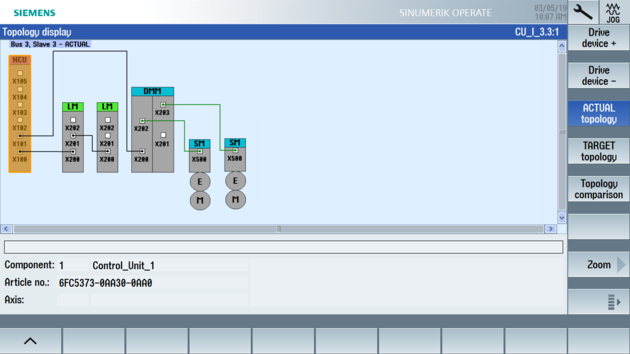

The SINAMICS S120 supports the parallel connection of Line Modules under the following conditions:
Same type
Same type rating:
Available for following Active Line Modules: 55, 80 and 120 kW
Same rated voltage
Same firmware version
To switch two Active Line Modules Booksize in parallel, the supply with a common line connection and synchronous control via a common Control Unit are required. It is not permissible to connect the two modules connected in parallel to electrically isolated line supplies.
For space reasons, some applications require the use of Line Modules in booksize format, but the available performance range with a single booksize Line Module is insufficient for the application.
The parallel connection of booksize Active Line Modules offers the following advantages:
Extension of the power range by higher S1 and maximum powers for S120 in booksize format
Higher maximum prechargeable DC-link capacity up to 38 mF
Only a shared DC link with energy exchange between all connected drives is required.
Usable in Active Mode, Smart Mode and Extended Smart Mode of the infeed
Commissioning is simple because no additional parameter assignment is required.
The commissioning engineer sees only a larger Active Line Module.
No additional effort is required for commissioning and data backup.
Select the "Commissioning" → softkey "Drive system" → softkey "Topology" operating area: The two Line Modules are represented in the topology view:
The system detects that the infeed has not yet been commissioned and that initial commissioning is required:
|
You can check the setting of the following parameters with the "Machine data" → softkey "Infeed parameters":
Parameter | Meaning |
|---|---|
p0108.15 = 1 | Parallel connection of function module activated |
r0200[0] r0200[1] … r0204[0] r0204[1] | Current power unit code number of the first ALM Current power unit code number of the second ALM … Power unit hardware properties of the first ALM Power unit hardware properties of the second ALM |
r7000 = 2 p7001[0] = 1 p7001[1] = 1 … | Parallel connection, number of active power units Parallel connection, enabling of power units Parallel connection, enabling of power units |
Further information can be found in:
SINAMICS S120 Drive Functions Function Manual, Chapter "Function modules" → "Parallel connection of power units".
SINAMICS S120 Application example "Parallel connection Active Line Modules in booksize format"
See also:
Infeed: Configuration
Infeed: Configuration - summary